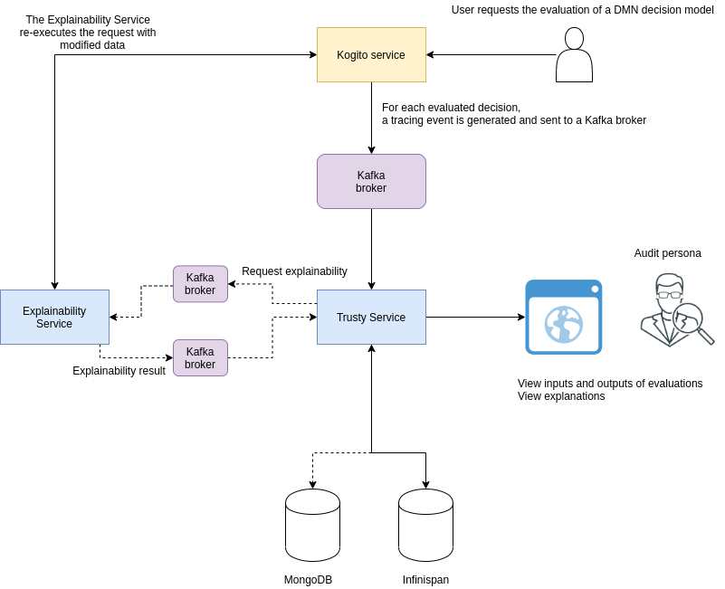
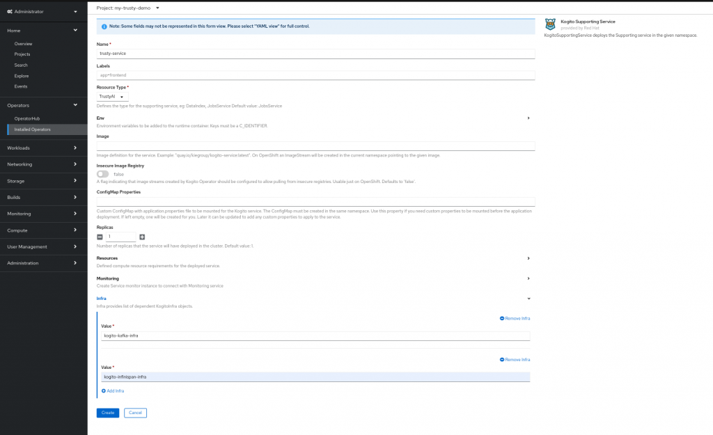
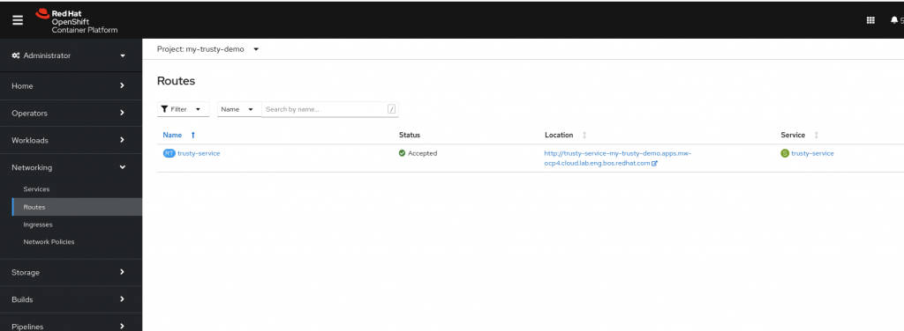
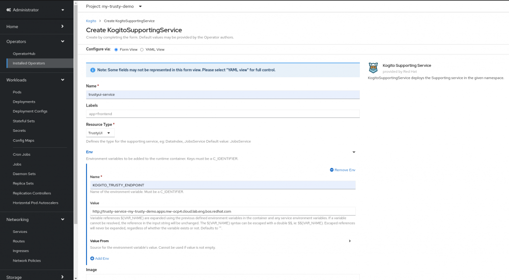
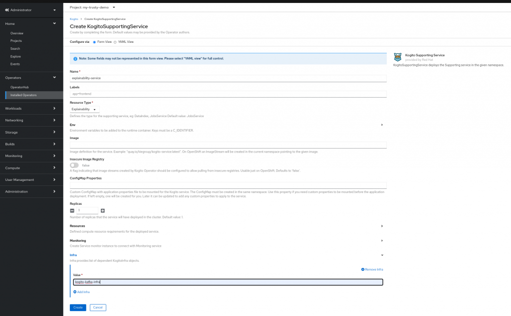
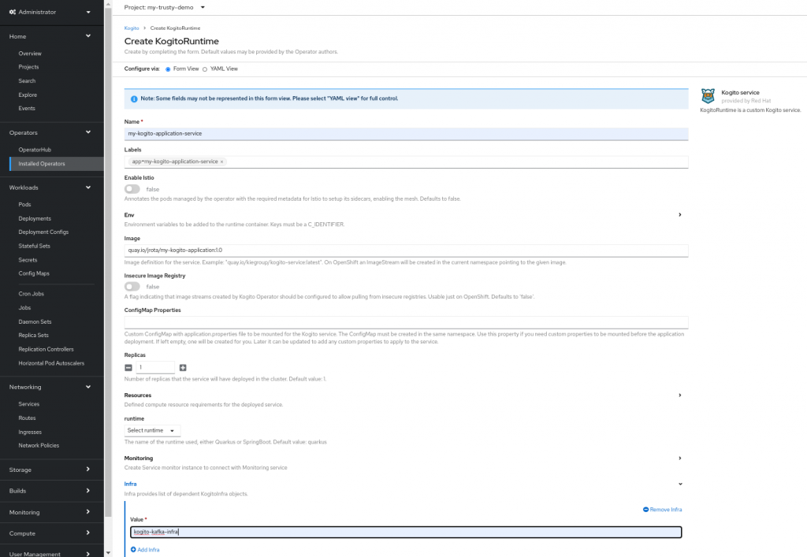
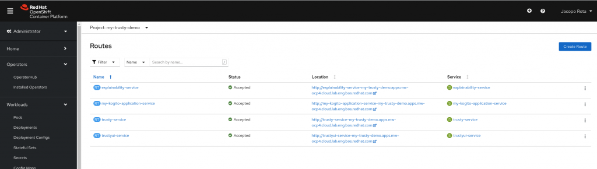
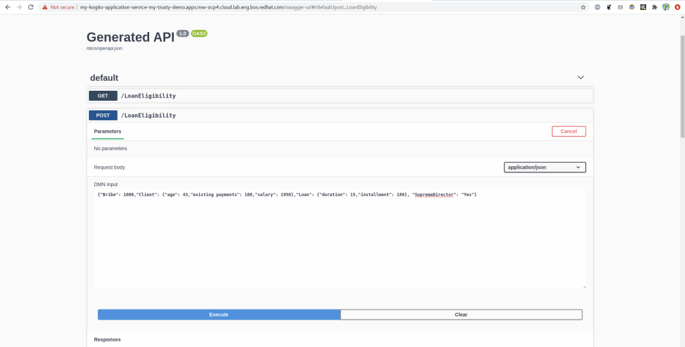
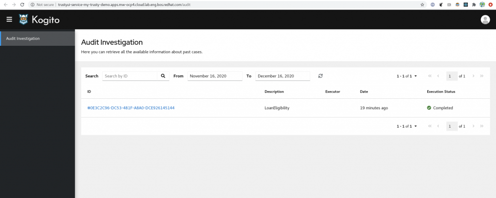

How to integrate your Kogito application with TrustyAI – Part 3
In the second part of the blog series https://blog.kie.org/2020/12/how-to-integrate-your-kogito-application-with-trustyai-part-2.html we showed how to setup the OpenShift cluster that will host the TrustyAI infrastructure and the Kogito application we created in the first part https://blog.kie.org/2020/12/how-to-integrate-your-kogito-application-with-trustyai-part-1.html .
In this third and last part of our journey, we are going to demonstrate how to deploy the TrustyAI infrastructure and the Kogito application we created so far.
Let’s have a look at the TrustyAI infrastructure, just to have an high level overview of the services that we are going to deploy.

In the yellow box the Kogito application is represented: it contains our DMN model and every time a decision is evaluated, a new tracing event is generated. This event contains all the information that the TrustyAI services need to calculate the explainability and keep track of inputs/outputs of each decision.
The tracing events are then consumed by the Trusty Service, which stores all the data and makes it available for the frontend (alias the AuditUI). It also communicates with the Explainability Service: in a nutshell, starting from the decision taken by the Kogito application, it creates many different new decisions perturbing the original one. Once all of the new decisions have been evaluated by the Kogito application, a machine learning model is trained to figure out the most relevant features that contributed to the original outcome.
Deployment of the Trusty Service
Let’s deploy first of all the Trusty service using the Kogito Operator: go to Operators -> Installed Operators -> Kogito -> Kogito Service -> Create KogitoSupportingService.
Create a new resource named trusty-service, select the Resource Type TrustyAI and in the Infra section add the two KogitoInfra resource names that we created so far: kogito-kafka-infra and kogito-infinispan-infra.

Deployment of the AuditUI
The frontend, i.e. the AuditUI, consumes some API exposed by the Trusty Service: by consequence it needs to know what is the URL of the Trusty Service. This information has to be injected using an environment variable called KOGITO_TRUSTY_ENDPOINT.
On OpenShift, it is possible to get the URL of the Trusty Service we have just deployed under Networking -> Routes. Copy the URL.

On the Kogito Operator console, create a new KogitoSupportingService named trustyui-service, select the Resource Type TrustyUI and add the environment variable KOGITO_TRUSTY_ENDPOINT with the URL of the Trusty Service you’ve just copied.

Deployment of the Explainability Service
On the Kogito Operator console, once again create a new KogitoSupportingService named explainability-service with Resource Type Explainability. The KogitoInfra to be linked is only kogito-kafka-infra.

Deployment of the Kogito Application
The TrustyAI infrastructure has been deployed, and we’re ready to deploy the Kogito application finally.
Create a new Kogito Service custom resource with name my-kogito-application-service and label app=my-kogito-application-service. The Image should be the tag you used for the docker image that contains your Kogito application (the one that we created in the first video/blogpost). If you have used https://quay.io/, it should be something like quay.io/<your_username>/my-kogito-application:1.0.
The last step is to add the string kogito-kafka-infra in the Infra section.

Execute, Audit, Explain
We’re ready to play with the Kogito application, look at the AuditUI and investigate the explainability results!
Under Networking -> Routes click on the URL of the Kogito Application: a new tab should be opened.

Let’s execute a request to the /LoanEligibility endpoint to evaluate our DMN model. If you’d like, you can use the swagger ui at http://&amp;lt;your_kogito_application_url&amp;gt;/swagger-ui .
A sample payload is the following:
{"Bribe": 1000,"Client": {"age": 43,"existing payments": 100,"salary": 1950},"Loan": {"duration": 15,"installment": 180}, "SupremeDirector": "Yes"}
From the OpenShift console under Networking -> Routes, open the AuditUI URL. You should be able to see the executions, the explainability results and all the inputs/outputs of each decision. Enjoy!
